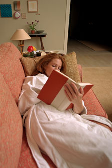

Scientists estimate that somewhere between 10 percent to 34 percentof Americans suffer from insomnia. In addition to the short-termhazards of fatigue, such as driving while sleepy, it also can havelasting impacts on our health: Studies show that sleep deprivationcan contribute to everything from hypertension to depression toobesity.
Here are some tips for getting a restful night's sleepnaturally:
1. Try to keep a regular bedtime and get up around the same timeeach morning, including weekends.
2. Keep lights low in the evening (as safety permits), and sleep ina dark room. When you awaken, head for bright light ? draw open theshades and curtains, or go into a brightly lit room until you feelalert.
3. To promote sleepiness before bed, take a warm bath, or tryrunning your hands and feet under warm water.
4. Gentle stretching or yoga exercises also can help promoterelaxation.
5. Use your bedroom only for sleep and intimate activities ? keepthe television in another room.
6. Avoid stimulants of any kind if you suffer from sleep troubles.Skip the late afternoon colas and coffee, and cut down on alcohol,too. It may make you feel sleepy at first, but the byproducts itgives off as it breaks down in the body will wake you uplater.
If you want to learn how to minimize stress and lead a healthier,happier life, read Georgia Witkin's books, The Female Stress Survival Guide and The Male Stress Survival Guide
|
 If you consistently have trouble falling asleep, sleep researchers suggest getting out of bed and engaging in a relaxing activity, such as reading or listening to mellow music, until you're sleepy. |
|
|